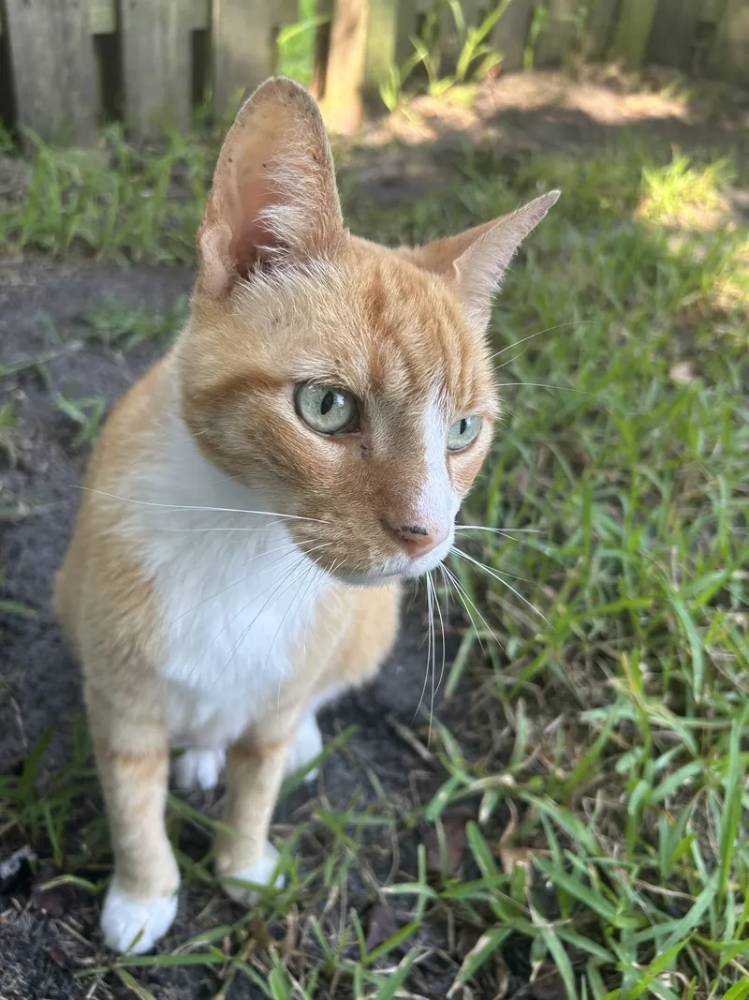

About Me
Hello! My name is Daniel Kuehn. I earned a Bachelor of Science in Information Technology (BSIT) from Daytona State College.
I originally created this website as a project for COP4813 – Web Systems I. It now serves as an archive of the assignments I completed for the course.
Outside of coursework, I'm an Arch Linux user (btw) who enjoys programming, experimenting with development environments, and working on open-source software. At the moment, I'm primarily interested in Go and Bash.
When I'm not coding, you'll usually find me playing Old School RuneScape and listening to trance music.
Want to get in touch? Head over to my Contact page for my email and GPG key.
My Cat

This is my cat Jeff. He originally appeared on the home page, but he moved here so the index could focus on assignments and course links.
Jeff is a very good boy, though he definitely enjoys causing a little mayhem from time to time.